Guardians of the Galaxy
"I have lived most my life surrounded by my enemies. I would be grateful to die among my friends."
-Gamora, 2014

What am I getting myself into?
Take a look at the movie's trailer for a sneak peak.

Whose stories are told in this chapter?
Get to know the important characters appearing in this movie.

So what really happened here?
Check out the synopsis to get an overview of what took place in this film.

Now where do we go?
Think of the post credits scene as dessert to your 5-star meal.

In 1988 Missouri, a young boy named Peter Quill stands by his mother, Meredith, as she lays dying in a hospital bed. Close to death and delirious, Meredith laments on Peter's father, whom the boy has never met, describing him as an "angel". When Meredith finally passes on, a distraught Peter flees from the hospital. After distancing himself from the building, he enters a field where a spaceship suddenly appears, the occupants of which bring Peter aboard and depart into space.
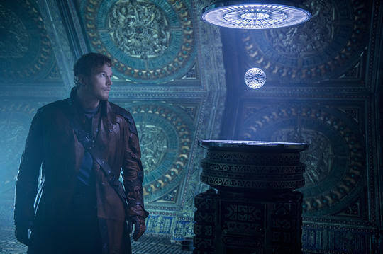26 years later, Quill is now an adult and a member of the Ravagers led by Yondu Udonta. The Ravagers are hired by the Broker to recover an Orb from the planet Morag. Quill, who has grown bitter towards the Ravagers for abducting him and ruining his childhood, travels to Morag alone and steals the Orb for himself, only to be intercepted by Korath the Pursuer who served under Ronan the Accuser. For the past several years, Ronan, despite a delicate peace treaty between his people and the Xandarians, has been systematically invading Xandarian controlled and allied worlds, killing hundreds of thousands in a mad quest for Kree purity. The Xandarians have tried to plead their case to the Kree hierarchy, but the Kree refuse to get involved.
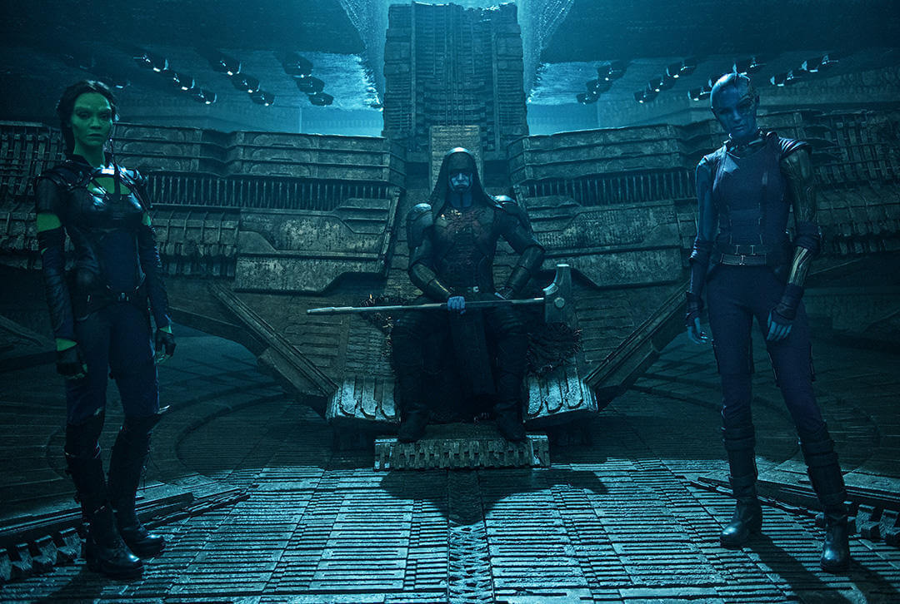Although Quill escapes with the artifact, Yondu discovers he has stolen the Ravager's prize and issues a bounty for his capture. Meanwhile, Ronan is revealed to be searching for the Orb as part of a deal with Thanos in exchange for the annihilation of Xandar. To aid in the hunt, Thanos has lent Ronan Gamora and Nebula. By tracking the Ravagers' brokers and past dealings, the villains learn of Yondu's deal with the Broker and send Gamora to Xandar to intercept Quill.
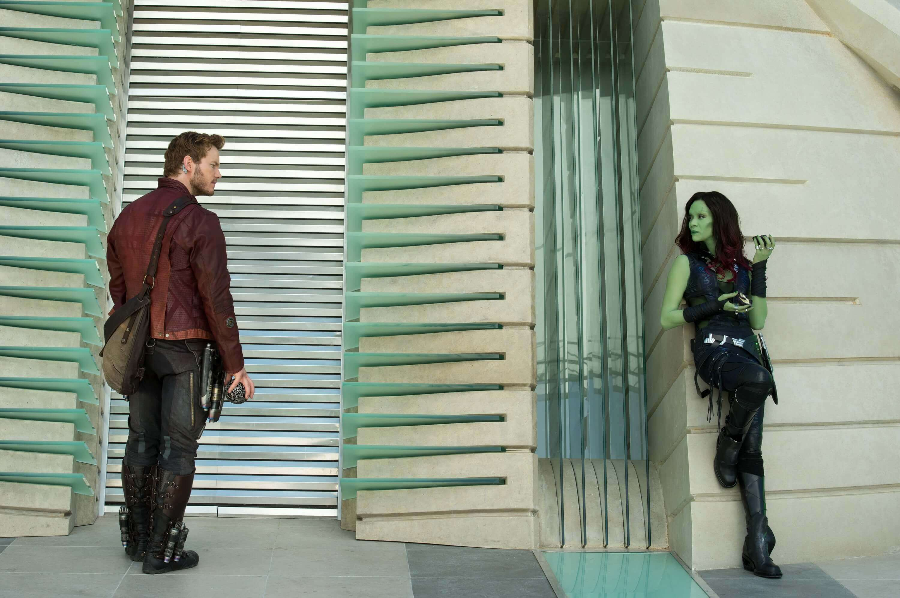On Xandar, Quill attempts to sell the Orb to the Broker, but upon learning that Korath was working for Ronan, the Broker refuses to become involved with the Orb and turns Quill away. Suddenly, Quill is ambushed by Gamora, who takes the Orb and flees into the streets. A fight ensues, drawing in two bounty hunters, Rocket Raccoon and Groot, who both seek to collect Udonta's bounty. The Nova Corps, Xandar's prime military force, arrive and arrest the group, imprisoning them in the Kyln.
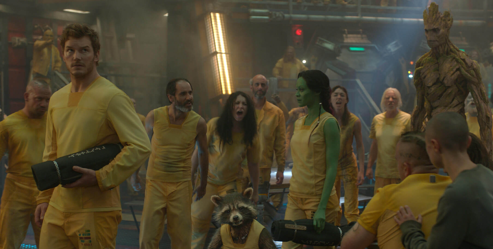On the Kyln, the other prisoners, aware of Gamora's relationship with Thanos and Ronan, threaten her life. Drax the Destroyer even attempts to kill Gamora for the murder of his wife and daughter by Ronan, but Quill convinces him that he can get to Ronan through Gamora. Gamora reveals that she intended to betray Ronan and keep the Orb, having grown weary of Ronan's methodology, deeming him insane and a risk to galactic stability. Learning that Gamora has a buyer who is willing to pay a very hefty fee for the artifact, Rocket, Quill, Groot, and Gamora work together to escape the Kyln.
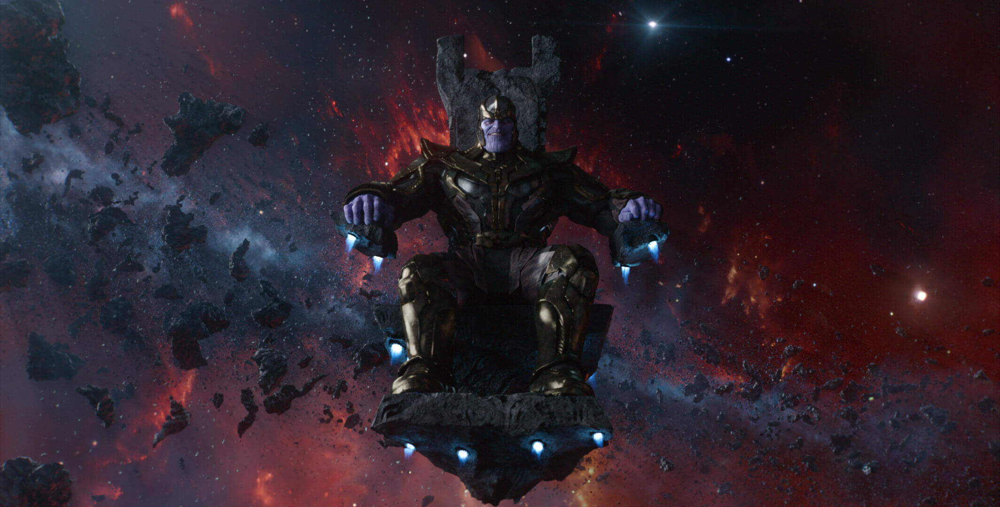Learning of Gamora's betrayal, a furious Ronan meets with Thanos in person and angrily berates him for not taking Gamora's betrayal seriously. When the Other scolds Ronan for disrespecting the warlord, Ronan angrily breaks the Other's neck, killing him and forcing Thanos to speak to Ronan directly. Undaunted by Ronan's complaints, Thanos waves Ronan away, and while Gamora's betrayal is an issue, Thanos entrusts both Ronan and Nebula with fixing that problem. As Ronan departs, Thanos grimly warns him that if he returns empty-handed again, he will "bathe the stairways" in his blood.
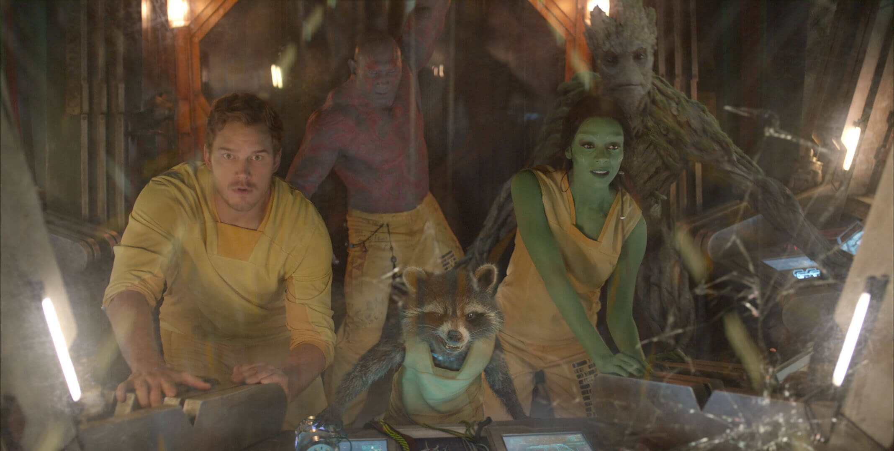Quill and his allies, accompanied by Drax, manage to escape the Kyln, where they distract the guards by disabling the station's artificial gravity. They flee in the Milano and travel to Knowhere where the fugitives spend time in the Boot of Jemiah, while Gamora was waiting for her contact. Drax and Rocket, both heavily intoxicated, get into a fight after Drax insults Rocket's appearance, after which a morose Rocket laments on his creation and the pain he was forced to endure.
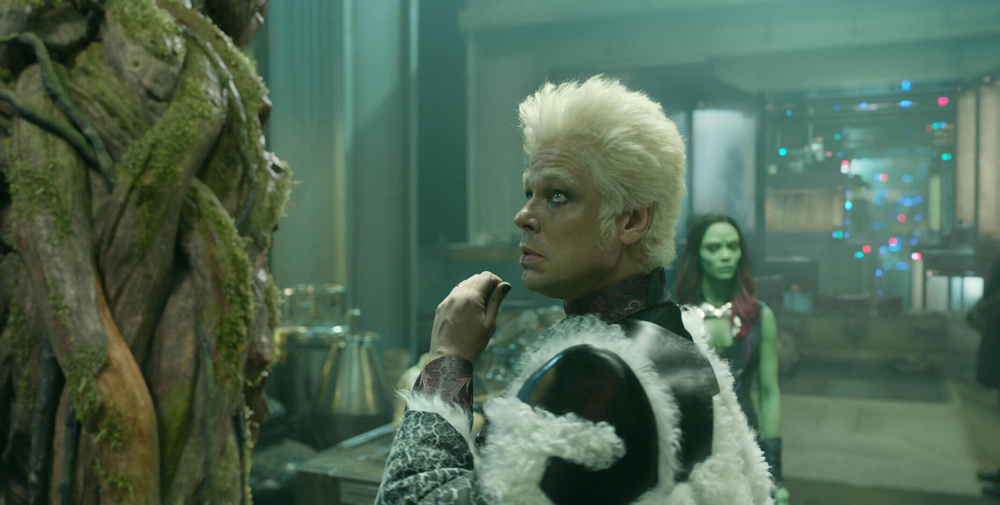While Drax furiously leaves the proceedings, the rest of the group are summoned by Carina to meet with Taneleer Tivan. Arriving at Tivan's museum, the group hand the Orb over to Tivan, who opens up the artifact to reveal an Infinity Stone, an item of immeasurable power that destroys all but the most powerful beings who wield it. Tivan explains that the stones were the remnants of six singularities that predate the universe, their power compacted into six "stones", and that their power was too great for all but the most powerful beings to wield; all others are inevitably destroyed.
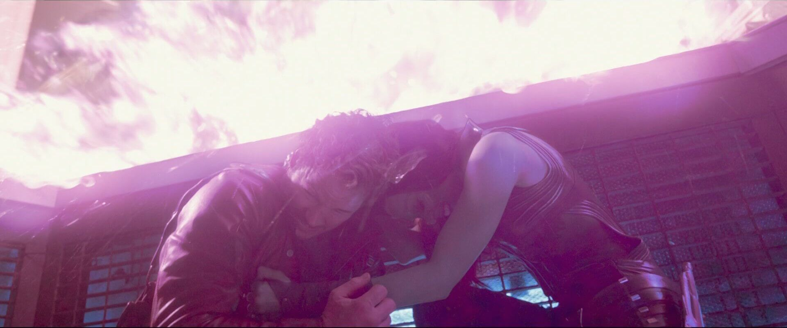Tivan prepares the give the outlaws their payment, but Carina, seeing this as a chance to free herself from servitude under Tivan, suddenly grabs the stone and taps into its power. A massive energy pulse is fired from the Orb, killing Carina and blowing up much of Tivan's collection. Quill, Gamora, Rocket, and Groot barely escape with their lives.
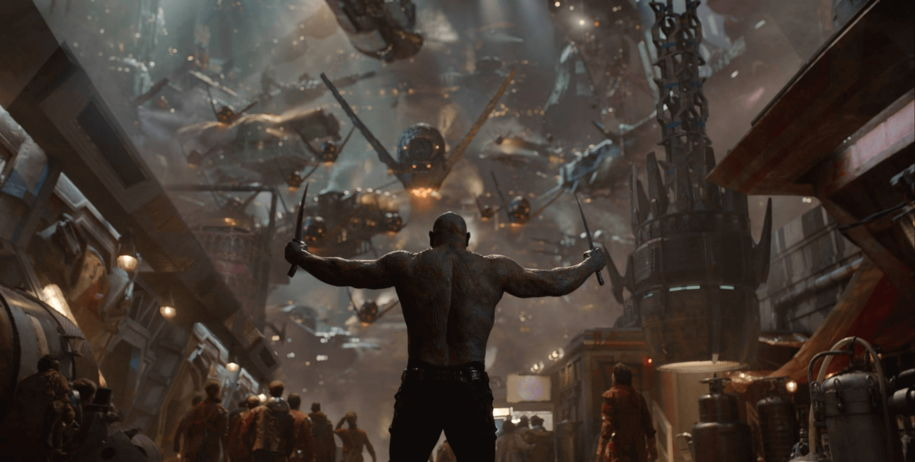Gamora, finally understanding the full extent of the danger the Orb holds, attempts to convince the others to hand it over to the Nova Corps for protection, when Ronan and his forces suddenly arrive, having been summoned by a drunken Drax. While Drax battles Ronan, the others attempt to escape using the Mining Pods and are pursued by Ronan's Sakaaran minions, led by Nebula. Ronan easily defeats Drax, while Nebula destroys Gamora's Pod, leaving her floating in space.
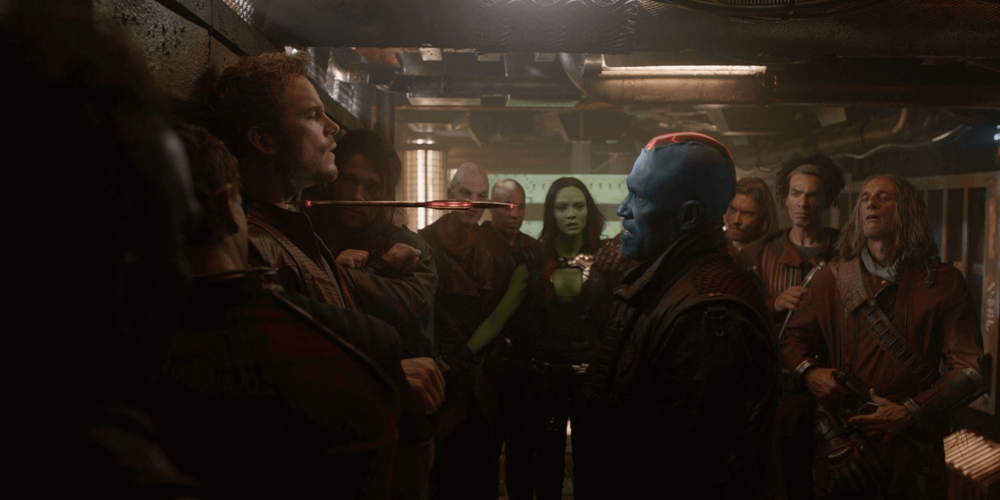Nebula takes the Orb and Ronan's forces depart. Despite Rocket's insistence that they flee, Quill finds himself unwilling to leave Gamora and summons Udonta before following her into space, giving her his helmet to survive; Yondu arrives and collects the pair before they succumb to the exposure. Quill manages to negotiate a truce with the Ravagers after convincing Yondu that they can recover the Orb from Ronan and sell it.
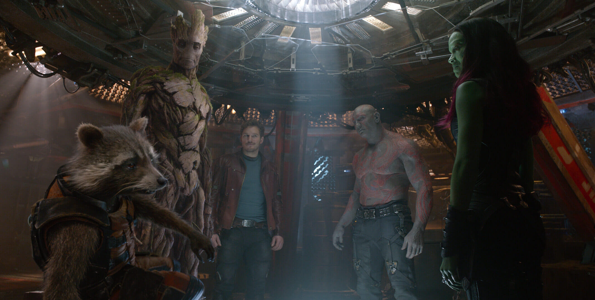Groot convinces Rocket and Drax to rescue Quill and Gamora, and the three attempt an attack on Udonta's ship to recover their friends. Reunited, the group agrees that facing Ronan means certain death, but that they must stop him from using the Infinity Stone to lay waste to the galaxy. On the Dark Aster, Ronan contacts Thanos, who demands that the Kree deliver the Orb to him as promised. However, Ronan embeds the Power Stone in his hammer, taking its power for himself, promising that after the destruction of Xandar, he will come for Thanos. Hateful of her adopted father for all the suffering he wrought upon her throughout her life, Nebula agrees to aid Ronan. Quill sends a message to Rhomann Dey, warning the Nova Corps of Ronan's attack.
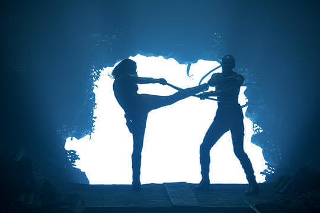Allying with a Nova Corps fleet, Quill's group and the Ravagers arrive at Xandar, confronting the Dark Aster. While Rocket assists the Nova Corps fleet, the rest of Quill's team breach the Dark Aster and move towards Ronan. Gamora battles Nebula while Quill, Drax, and Groot battle and kill Korath and the Sakaaran soldiers. Defeating Nebula, Gamora tries to convince her sister to abandon Ronan and join her in freedom; deeming Gamora's new choice as insane, Nebula refuses her sister's offer and flees from the battle in a hijacked Ravager ship. As the battle proceeds, allies begin to fall as Necrocrafts start falling from the sky onto the city, killing many in the process including Horuz, while Rocket and other Ravagers were attempting to destroy the ships before they hit the ground.
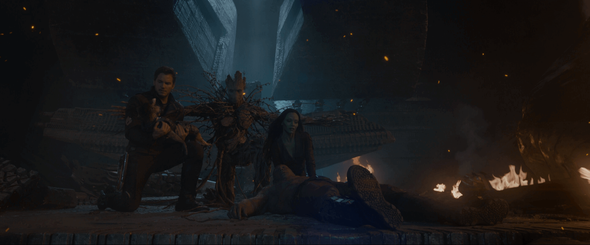Ronan uses his new power to destroy the Nova Corps fleet, including Garthan Saal and easily overmatches Quill's team. Before he can kill them, Rocket flies his ship into the Dark Aster and into Ronan, seemingly killing him. The extensive damage causes the Dark Aster to crash land on Xandar, with Groot apparently fatally sacrificing himself to shield the group.
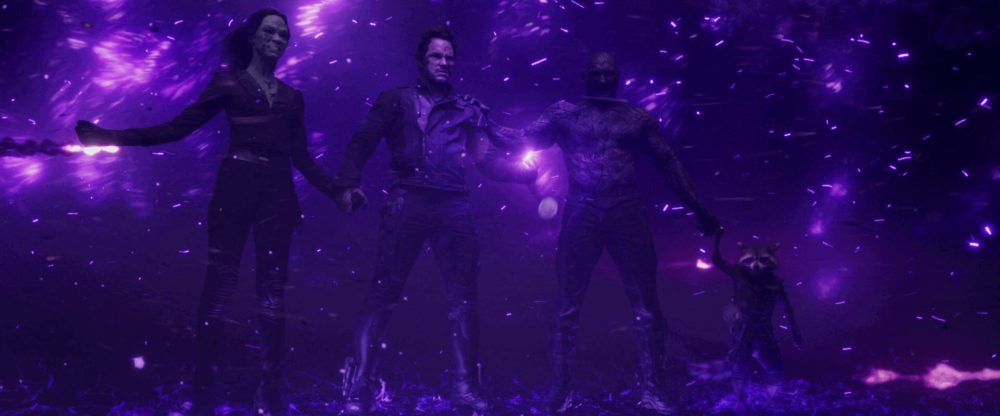Quill's team survives the crash, but their relief is short-lived when Ronan, unscathed by the crash, emerges from the wreck and prepares to destroy Xandar. Quill suddenly starts dancing, distracting Ronan long enough for Drax to destroy the Kree's hammer with the Hadron Enforcer. The Infinity Stone flies from the hammer, and Quill grabs it, but its power begins to destroy him until he joins hands with Gamora, Drax, and Rocket, who share its burden. The four then direct the stone's power towards Ronan, utterly destroying him.
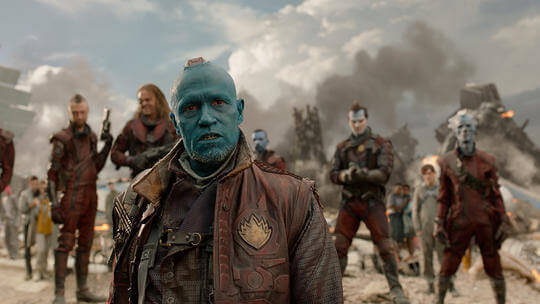Gamora immediately places the stone in a new orb, and Quill gives it to Yondu as part of their deal, although Quill warns that he should not open it since Yondu had seen what it was capable of doing. Yondu and the Ravagers then leave Xandar, commenting that they made a wise choice in not delivering Quill to his father like they had been hired to do all those years ago. Once they have left, Quill reveals that he had switched the containers- Yondu later opens the orb to find one of Quill's troll dolls. In the aftermath, Quill's group, now calling themselves the Guardians of the Galaxy after a mockery by Ronan, are praised by the Nova-Prime, Irani Rael, who expunges their criminal histories.
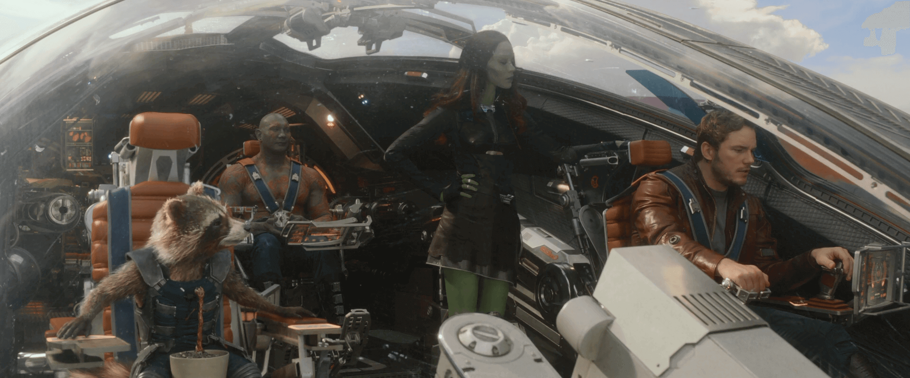She also reveals to Quill that, based on medical reports, they have deciphered that he is only half-human and that his father belongs to an ancient alien race that they have not yet encountered. The Guardians then leave Xandar in the Milano, which was repaired by the Nova Corps, and venture out into the galaxy in search of adventure, accompanied by a recovered twig from Groot, which is already beginning to regrow.
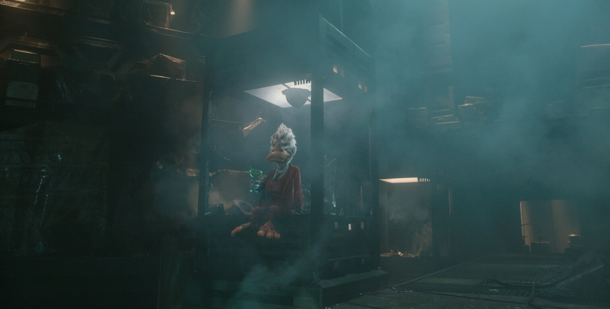Meanwhile, Tivan sits in his destroyed archive, where he is licked by Cosmo, and mocked by one of his collections: Howard the Duck.